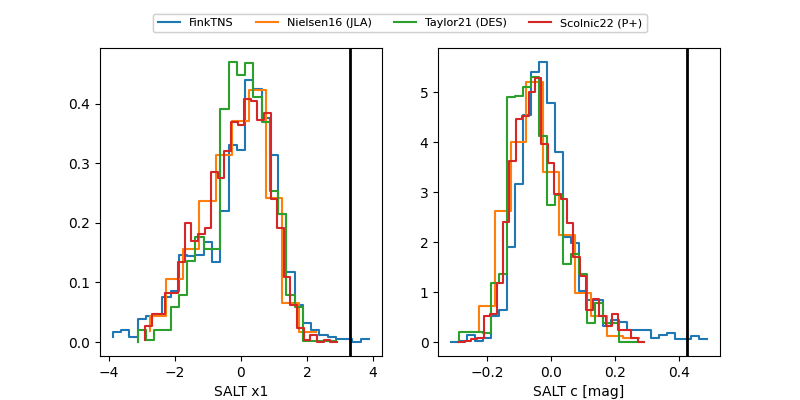

2025agbg
Target 2025agbg at 2025-12-31 18:00
Aliases and brokers:
FINK: link
Lasair: link
ALeRCE: link
TNS: link
YSE: link
alt names
ZTF25acgmaxu (ztf,fink_ztf)
2025agbg (tns,yse)
Coordinates:
equatorial (ra, dec) = 138.3014,-26.52757
equatorial (HMS+DMS) = 09:13:12.34,-26:31:39.27
galactic (l, b) = (253.9508,+14.95708)
Flags:
Photometry:
last ztfg=19.84, ztfr=19.24
1 ztfg, 1 ztfr detections
Lightcurve

Visibility


Additional plots
